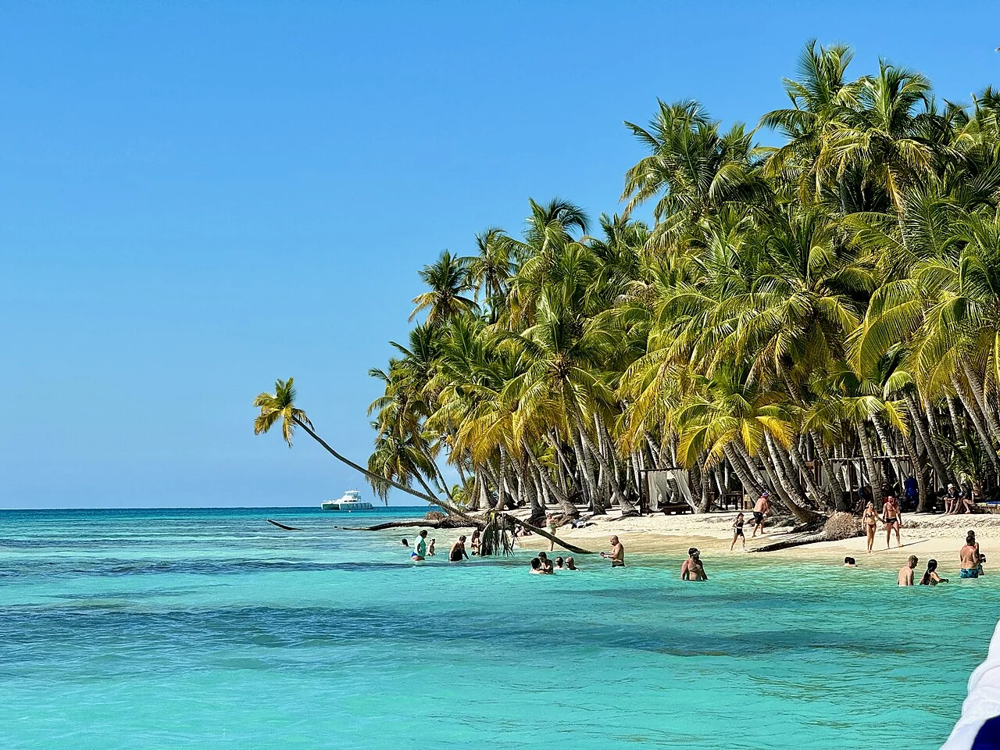

Île Saona
La Altagracia, République dominicaine · baignade

Île de 110 km² à 2,4 km de la côte sud-est de la République dominicaine, dans le parc national Cotubanamá. Le ministère du Tourisme dominicain la dit connue pour ses plages, ses palmiers et ses piscines naturelles. Selon Wikipédia, elle est entourée de bancs de sable et de récifs coralliens, et les plages les plus ouvertes sont au sud et à l’ouest. Selon le ministère, le temps est plus sec de décembre à avril à Bayahibe, et décembre à début mars sont les mois les plus agréables du pays.
- Lieu
- La Altagracia, République dominicaine
- Niveau
- Variable selon les conditions
- Activités
- baignade
- Type d'eau
- Mer / océan
- Coordonnées
- 18.16, -68.70 (position approximative du secteur)
Dangers à connaître
- L’île se rejoint en bateau, depuis Bayahibe.
- Aire protégée et site de ponte des tortues marines le plus important du pays : respecte la faune et les consignes du parc.
- Plus d’un million de visiteurs par an, selon Wikipédia : attends-toi à du monde.
Le conseil d'Ocean Buddy
Passe par une excursion en bateau depuis Bayahibe, le principal point d’accès : les départs ont lieu tous les jours.
Ouvrir dans Ocean Buddy Télécharger sur l'App Store
Source : Fiche Ocean Buddy · décembre 2026 · d’après Wikipédia et le ministère du Tourisme de la République dominicaine · à vérifier localement.